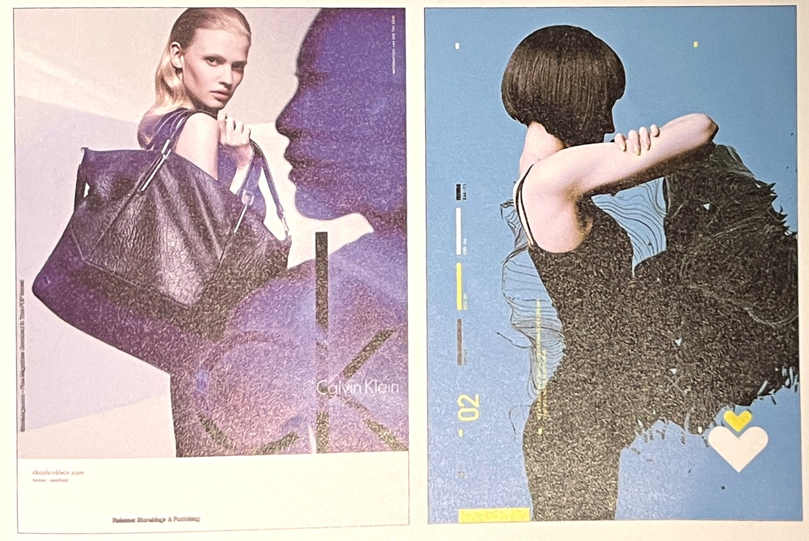
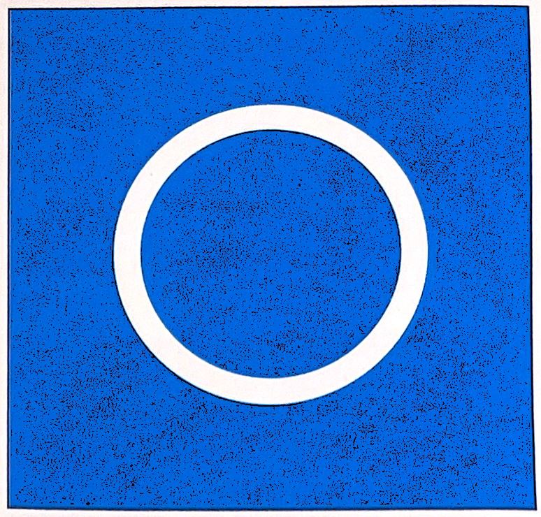
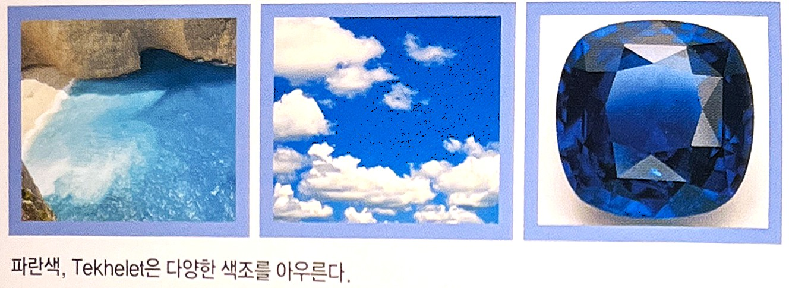
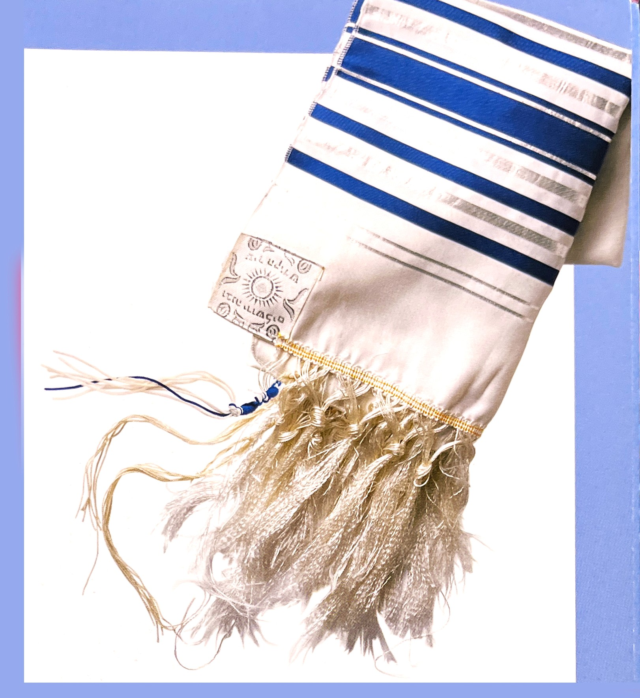
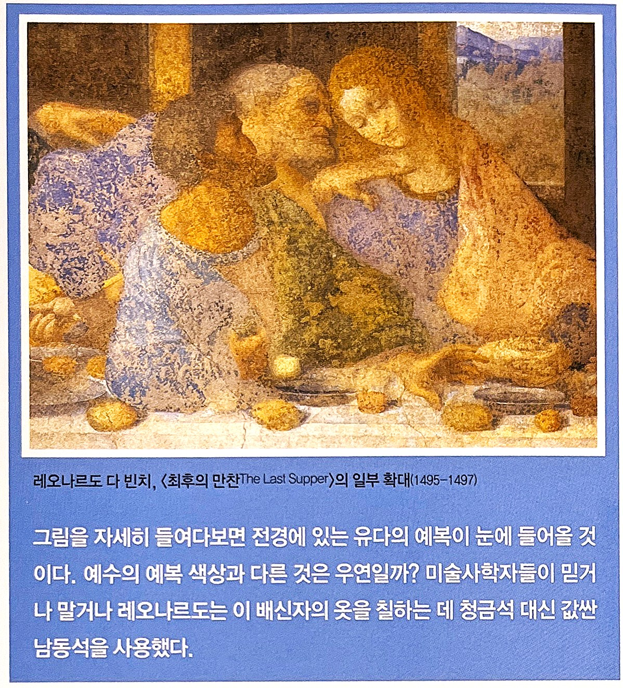
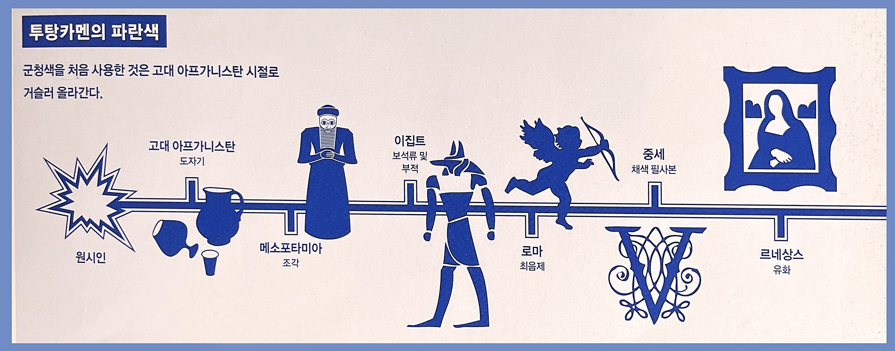
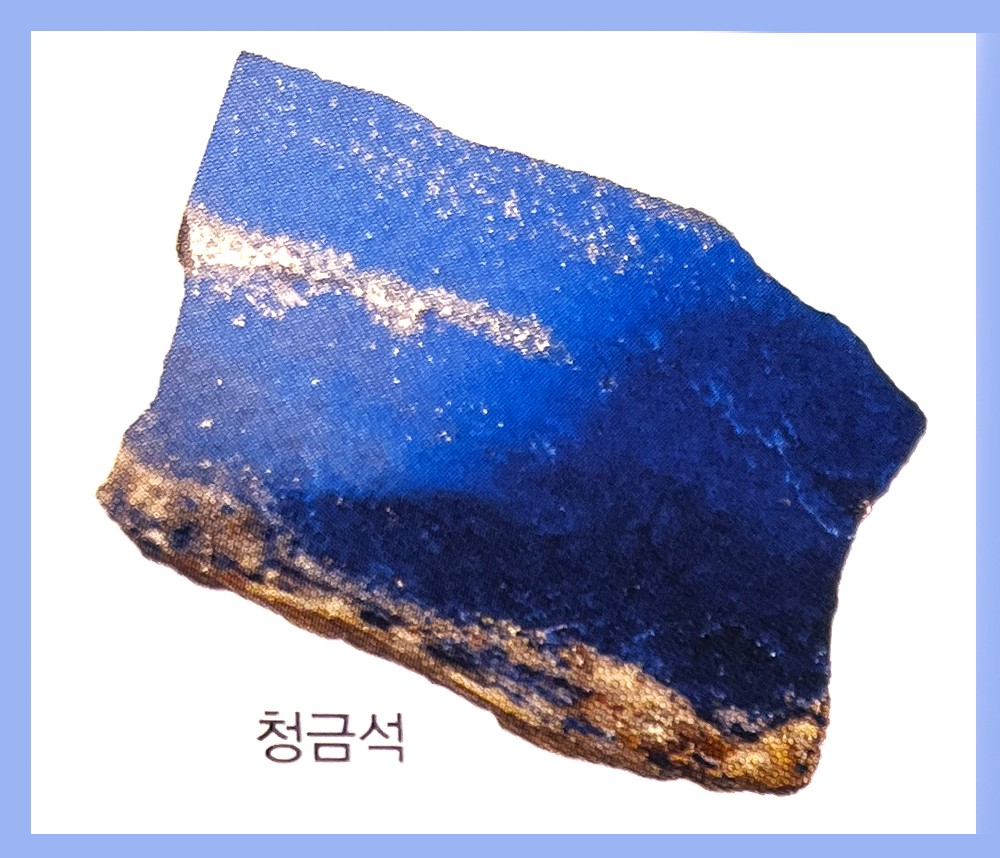
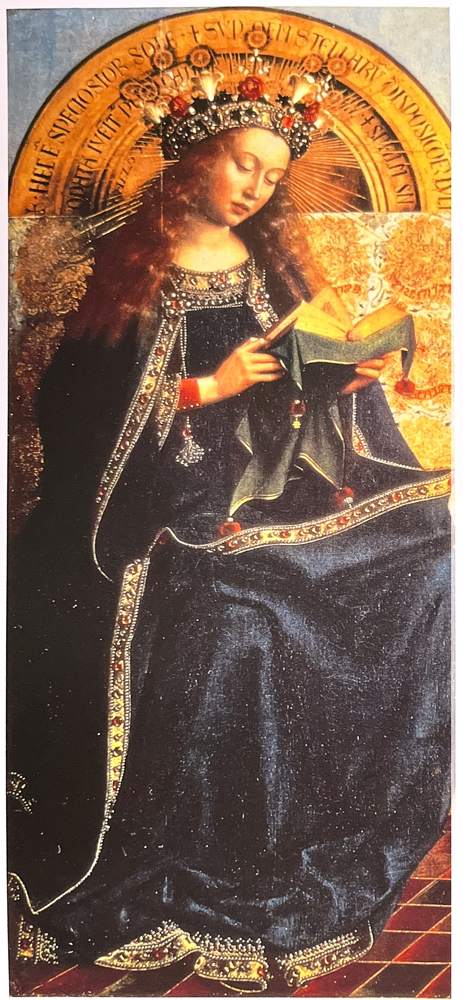
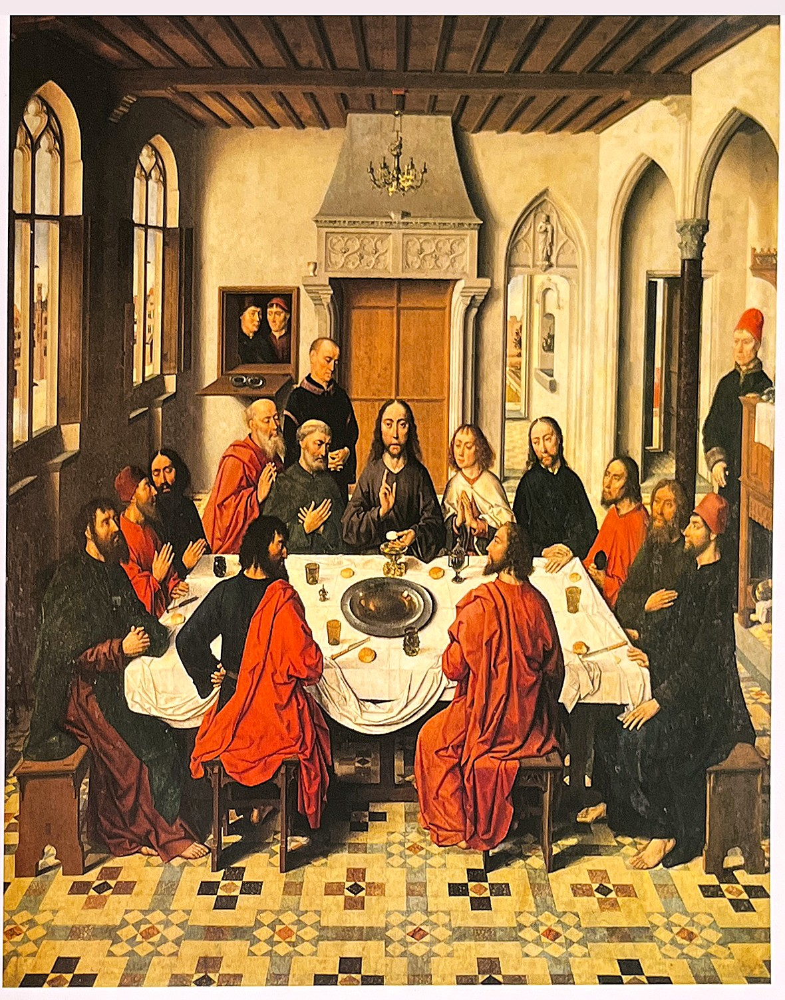
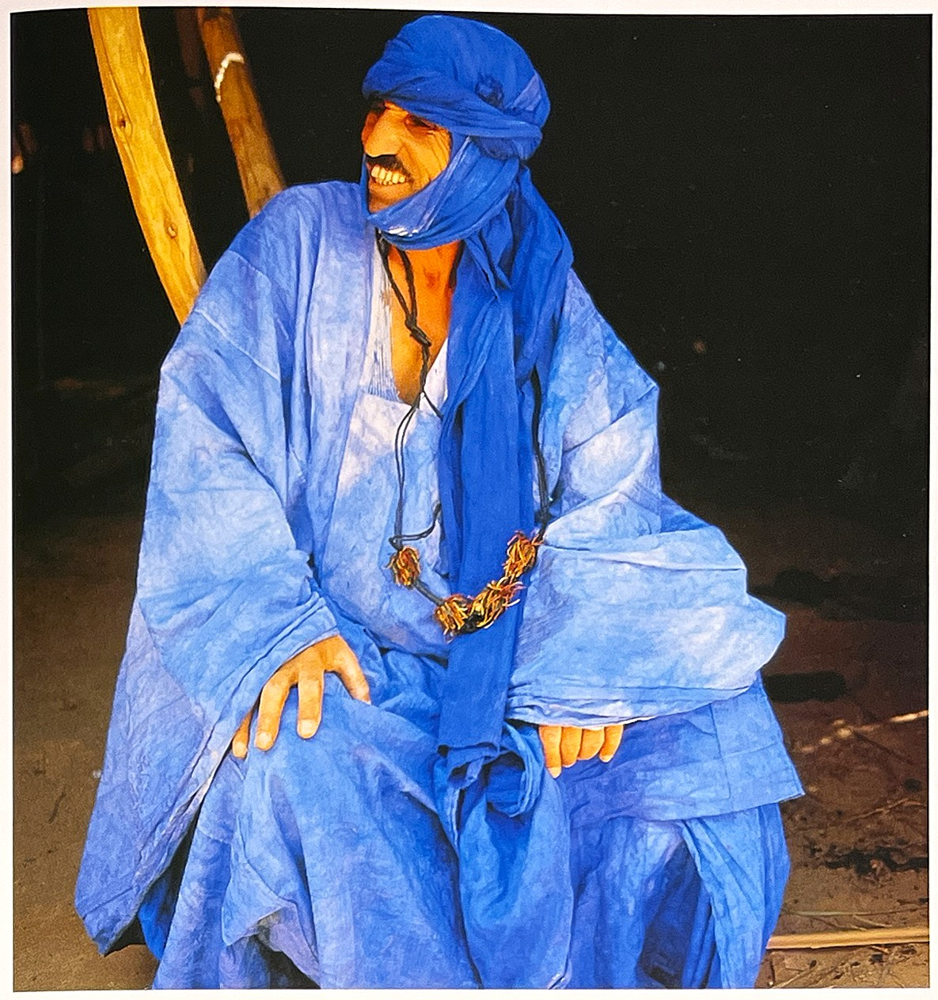

기업에서 신뢰도를 높일 때 사용하며, 자연을 상징해 충전의 의미도 내포하고 있다. 시원하고 상큼하면서 감정을 가라앉히는 역할을 하지만 음식의 맛으로는 쓴맛을 느끼게 한다. 만약 주방용품 전부가 파란색이라면 음식의 맛을 제대로 느끼기 힘들 것이다.
1. 색의 성격오랜 시간 만들어진 색상이 가지고 있는 성격 : 이기적, 주관적, 리더십이 강함, 성실, 냉정, 소심, 합리적, 보수적, 책임감과 자립심이 강함 2. 색의 영향사람이 인지했을 때 느낌 : 사고력과 창의력을 높여줌, 시원함과 편안함, 외로움, 진취적, 예술적, 창조적, 내향적이며 합리적임 3. 색의 처방색상을 의도적으로 활용할 수 있는 방법 : 피로 히복, 불안감 해소, 풍부한 상상력, 맥박이 낮아짐, 감정 억제, 불면증 치료, 근육 긴장 감소
* 패션광고나 그래픽에서 파란색은 차가움과 도시적인 세련미를 암시할때 사용한다. 이미지를 사용하고 대비를 활용하면 몽환적인 느낌을 줄 수 있다.
* Wolf wite Van - John Danielle 파란색이 주는 느낌은 감성적이기 보다 지적이고 차가운 느낌이 강합니다.
파란색의 상징[4]긍정적 감정과 상징: 왕족, 청춘, 고요함, 마술, 진실, 차가움, 남성 부정적 감정과 상징: 슬픔 연상되는 자연/자연물: 겨울, 얼음, 물, 하늘 정치.종교적 상징: 보수주의, 자본주의, 자유주의, 진보개혁주의
파랑색의 심볼원[6]
파랑은 삼원색의 주색으로 영어에서는 일반적으로 navy와 cyan사이의 색을 의미한다. 초록과 함께 파랑 또한 자연에서 많이 찾아 볼 수 있는데 물, 물로 이루어진 바다와 호수, 맑은 하늘, 차가운 얼음 등이 그것이다. 영어에서의 파랑은 슬픔의 느낌을 표현하는 색이기도 하다. 이는 파랑이 비나 폭풍과 연관된 색으로 그리스 신화의 신 젱우스가 자신이 슬프거나 울 때 비를 내리고 화가 날때 폭풍을 치게 한다는 내용에서 기원한 것이다.
영어에서 'feeling blue'라는 어구는 심해를 항해하는 낡은 배들 사이에서의 관습과 관련이 있으며, 이는 항해 중 선원들을 잃었을 때 파랑색 깃발을 날리고 선박 전체에 파랑색 띠를 칠하는 것에서 유래 되었다. 이러한 파랑의 슬픔의 뜻은 비와도 관련이 있으며 비는 우울한 감정을 더욱 부추기는 역할을 한다.
파란색(Blue)[4]파랑은 사람의 눈에 특별하게 비추어지며, 표현할 수 없는 무엇인가를 만들어 낸다. 사람들은 눈앞에 좋아하는 어떤 물건이 사라지면 기꺼이 그 물건을 찾고야 말겠다고 생각하게 된다. 파랑은 이때 느끼는 감정과 비슷하다. 파랑은 다시말해 어떤 일을 할 필요성을 느끼게 한다. 여기엔 강요의 요소가 없다. 자발적인 속성을 띤다. 괴테Johann Wolfgang von Goethe의 '색채론'에서
선사시대에 존재했던 많은 지역이 모계사회였다. 지금까지 발견된 여러 유물이나 정황에서 알 수 있는 사실이다. 영혼을 상징하는 동시에 모든 것을 보호하는 힘을 상징하는 하늘의 색으로 통하는 '파랑'은 가부장적인 문화가 시작한 극동지역에서부터 유행했다. 극동지역에서는 복을 주는 영혼이 들어올 수 있는 통로, 즉 문과 창문에 파란색을 칠했다. 비스한 이유로 젖먹이에게 파란색 천을 둘러주기도 했다.
밤하늘에서부터 군청색 바다까지 파란색은 우리의 시야를 넓히고 꿈을 널리 펼쳐준다. 우리는 파란색의 제복을 입은 남녀에게 권위를 부여함으로써 파란색에 대한 신뢰를 보여주고, 국가 재정의 안정성를 나타내는 블루칩 우량주를 통해 파란색에 의지하며, 파란색 담요로 남자 아이를 둘러싸고 그 아이의 방을 파란색으로 장식하여 남자다움을 나타낸다. 사람들은 파란색에서 안정감과 냉정함을 동시에 느낀다. 우리는 때때로 마음이 울적해지기도 하는데. 파란색은 우리의 낙관적인 기질 이면에 숨겨진 변덕스러운 기분을 나타낼 수도 있다.
파란색, Tekhlet은 디양한 새조를 아우른다.
수세기 동안 파란색은 동시에 서로 극단적인 의미를 나타내는 데 사용되어 왔다. 가령 청바지나 블루칼라라는 표현을 통해 노동자 계급을 나타내기도 하고. 감청색 royal blue이나 우리네 혈관을 흐르는 귀족 혈통blue blood이라는 표현을 통해 부유한 계급을 상징하기도 했다. 파란색은 하늘과 바다에 항상 존재하므로 지구가 '푸른 행성'으로 표현되지만 지상에 묶여 사는 식물과 인간에게는 파란색이라는 용어가 좀처럼 사용되지 않는다.
유대인들이 기도할 때 쓰는 숄, 파란색 장식이 있다.
이스라엘 백성들은 성전에 사용하는 성물을 파랑 천으로 싼 채 광야를 돌아다녔다. 신부나 사제들도 파란 예복을 입었다고 한다. 파랑의 일종인 인디고 파랑은 성부, 성자, 성령의 삼위일체를 의미한다. 최후의 심판 그림에 인디고 파랑을 사용한 이유다. 인간의 영생도 파랑 이미지로 나타낼 수 있다.
중세의 파랑[7]비록 14세기까지는 보라색이 가장 귀하게 여겨지기는 했지만 보라색이 상징하던 천국의 함축적 의미는 중세를 지나면서 점차 파랑색으로 옮겨오게 되었으며, 특히 귀중한 청금석의 경우에는 더욱 그러했다. 색채의 역사를 추론하고자 하는 시도는 매우 드물다.그런 시도 가운데 쿠르트 바트 Kurt badt는 밝음과 어두움에 모두 관계된 색이라는 점에서 파랑색의 이중성을 지적했다. 스테인글라스의 발달과 관계가 깊은 중세 후기의 파랑색에 대한 평가는 파랑색을 색채 척도에서 어두운 끝부분으로부터 밝은 끝부분으로 옮기고자 하는 경향이 있었다. 중세 초기에는 파랑색을 어두움과 유사한 것으로 간주하는 데 의심의 여지가 없었기 때문이다. 라벤나에 있는 성 아폴리나레 누오보 성당의 모자이크에서 빨강과 파랑색 천사들에 대한 글은, 작품 안에서 양들 쪽에 있는 붉은색 인물이 선한 천사이며 붉은색이 그의 불의 본성을 표현한다. 반대로 염소들 쪽에 있는 파란색 인물이 어두운 악의 천사이며 이 천사의 속성은 공기임을 보여주고 있다.
아름다운 청금석lapis lazuli [1]파란색 염료는 자연에서 발견하기 힘들다. 이집트에서는 파란색 돌을 원석으로 이를 잘게 으깨고 갈아서 염료를 구했다. 이 돌은 '청동광', '청금석' 등의 이름으로 불렸다.
이집트에서는 수세기 동안 파란색 합성색소가 시장을 독점했다. 그렇다고 청금색의 아름다움에 매료된 민족이 단지 이집트인 뿐만은 아니었다.
르네상스 시대 화가들은 많은 사람들이 그토록 탐내는 군청색ultra marine 색소를 생성하는데 청금색을 사용했다. 이 색소가 귀했던 것은 청금색이 아주 먼 외국에서 수입되었기 때문이었다. 청금석은 주로 아프리카에서 채굴되었는데 이를 색소로 만들려면 상당한 노동력이 필요했다. 하지만 그렇게 만들어진 색소에는 다른 그 어떤 파란색이 흉내낼 수 없는 감동이 있었다. 레오나르도 다빈치와 당대의 위대한 예술가들은 자신들의 고객이나 후원자들과 계약을 맺으며 계약의 일부로 이 귀중한 색소를 요구하곤 했다.
실제로 이 색소는 아주 값비싸서 일부 부도덕한 판매자들이 남동석을 군청색으로 속여 건네곤 했을 정도였다. 남동석은 모양이 매우 유사하긴 했지만 화학적 구성이 달랐으며 갈아서 가루로 만들면 녹색빛을 띠는 반투명한 물질이었다. 미학적 측면에서 보자면 청금석의 본질적인 핵심이 결여되었다고나 할까. 청금석은 자줏빛을 띤 진청색이었으며, 남동석은 아주 저렴한 가격으로 판매되었다.
레오나르도 다빈치 [최후의 만찬]
투탕카멘의 파란색
우연히 발명된 파란색[1]고대 세계에는 파란색이 거의 존재하지 않았다. 파란색 열매는 사실상 존재하지 않았으며, 진짜로 파란 꽃은 거의 찾아 보기 어려웠다. 18세기 독일의 화가 하인리히 디스바흐Heinrich Diesbach는 이집트인 이후로 역사책에 기록된 최초의 파란색 합성색소를 만든이다. 디스바흐는 일명 붉은 호수라는 색소를 만든 중에 돈을 절약하면서도 색상을 좀 더 개선해보려고 동물성 기름으로 오염된 저급 탄산칼륨을 사용했는데 에상외로 전혀 새로운 색소를 발견하게 된 것이다. 이는 아주 생동감 있고 눈에 띠는 파란색이었는데, 그 이름은 프로이센 군복의 염료로 사용된 것에서 유래 되었다.
 파란색의 힘[3]파란색은 그 색조가 짙어질수록 개성을 보인다. 파란색이 깊어질수록 인간은 영원의 공간으로 끌러간다. 우린 그 안에서 맑고 순수한 감정을 만날 수 있다. 마침내 무아의 상태를 경험한다. 파랑은 하늘의 빛깔이다.
그 색조가 변하더라도 조용함을 나타내는 기능은 변하지 않는다. 파란색 톤이 진해져 검정에 가까워진다면 우울한 느낌까지 자아낼 수 있다. 이땐 깊이를 알 수 없이 심각해진다. 이런 방식으로 파랑은 심오한 움직임과 변화를 표현할 수 있다. 칸딘스키Wassily Kandinsky
파랑은 종교적인 색이다. 한없는 사랑을 갈구하는 감정을 나타낸다. 자궁 속 최초 생명체에 주어지는 조건없는 사랑에 대한 영원한 그리움을 의미한다. 빨강이 흥분, 매혹 같이 떠들썩한 느낌을 준다면 파랑은 정반대다. 고독의 세계에서 느끼는 내면의 조용함을 나타낸다. 무한한 아름다움을 느끼게하는 자연을 바라보면 파랑이 '낭만을 상징하는 색'이란 사실이 별로 놀랄만한 일이 아니다.
파랑은 빨강과 마찬가지로 신뢰를 상징한다. 물망초를 보면 내릴 수 있는 판단이기도 하다. 우리는 구전되는 이야기에서 꽃의 이중성을 발견한다. 남성성을 띤 수레국화는 수시로 색이 변한다. 이는 여성의 지조를 상징하는 파란꽃과 달리 '신뢰할 수 없는 사랑'을 나타낸다.
차가운 '이성'을 대변하기도 하는 파랑은 음주 반대론자들의 '청십자' 마크에서 드러난다. 비슷한 이유에서 학교에서 위험이나 재난을 알릴 때 '파란 편지지'를 사용한다. (독일 프로이센 주의 사무실에서도 공식적인 편지 봉투색은 푸른색이다). 이성 어린 판단이을 요구하는 의미가 담겨 있다.
영어엔 'I'm blue(난 우울하다).'란 표현이 있다. 여기에서목격되는 파랑의 느낌은 그리움, 염세, 우울, 그리고 슬픔이다. 여기에서 블루스 음악이란 장르가 탄생했다.
기독교가 유행한 서구 사회에서는 파랑이 여성적이면서도 종교적인 색깔로 통했다. 그래서 예수의 어머니인 마리아 옷에 쓰인 천이 파랑이다. 이러한 파랑의 이미지엔 조용함과 자기 확신, 믿음과 전통이란 의미가 담겨 있다.
얀 반 아이크가 1432년에 그린 겐트 제단화에서 보면 동정녀의 망토와 보석에 값비싼 안료인 군청색ultramarine을 사용했다.[7]
1464년부터 1468년까지 제작돤 루뱅의 성 피에르 성당에 있는 디르크 바우츠의 '최후의 만찬'제단화의 제작과 관련해 남아 있는 계약서는 재료의 질을 명기할 수 없었다는 점과 파란색을 채색하기 위해 대부분 저렴한 안료인 아주리테가 사용되었다는 점을 보여 주는 데 큰 도움을 준다. 몇 개 안되는 색을 혼합해 많은 색을 만들기 위한 기본 색채 준비에 대한 풍부한 언급도 나왔다.[7]
우리는 평화의 상징으로 파란색 배경에 성경에 나오는 흰색 비둘기를 그린다. 여기에 나오는 파랑에는 위험한 상황을 피하고자 하는 인간의 마음이 반영되어 있다. 이는 교통 표지판에도 활용된다.
파랑은 기적을 일으키고 병을 치유하는 효력이 있다고 믿어졌다. 비슷한 이유에서 이집트의 파라오는 축제 때 하늘의 신으로부터 직접 계시받은 내용을 알리는 자리에 파란색 투구를 썼다고 전해진다.
중국에서 파랑은 하늘의 권위와 영원한 생명을 뜻해 왔다. 인도에서는 파란색 머리를 한 갖가지 신들이 신비감을 자아낸다. ㅍ부에 파란색을 칠한 신이나 코끼리도 최고의 신성을 표시한다. 인도 신화를 보면 파랑은 세상근원으로서 '심장'을 상징학고 있다. 파란빛은 세상이 처음 창조될 때 나타났다고 여겨진다. 정신분석학자인 빌헬름 라이히Wihelm Reich는 사람들이 파란빛에서 자유와 생명력을 느낀다고 언급한 바 있다.
고대로부터 전해 오는 파란색에는 '인디고indigo'란 것이 있다. 인도에서 자라는 '인도고페라 틴크토리아'라는 식물에서 추출한 염료이다. 유럽인들은 영국이 인도를 식민지로 심을 때 거의 처음 이 색을 접했다. 하지만 곧바로 유행하진 않았지만 청바지가 유행한 후에야 인디고 색상이 염료로 쓰이면서 각광을 받았다.
파란색의 심리학[2]파란색 성향의 사람은 ‘잔잔한 물이 깊다(말없는 사람이 생각이 깊다)’라는 말을 그대로 보여주는 사람이다. 이들은 뛰어난 지능을 갖췄으며 ‘진실한 영혼’의 소유자이다. 인후(咽喉)도 파란색의 영향을 받고, 이 색상과 관련된 사람은 머리와 가슴이 인후를 통해 말한다. 이들은 생각이 깊어서, 미리 생각해보지 않고는 결코 행동으로 옮기지 않는다.
차분한 성격을 갖춘 이들은 결심을 할 때도 차분함을 유지한다. 이들의 사고는 차분하고 예리하다. 정직, 신의, 성실이 이들의 주요 특징이다. 마음이 항상 평안하고, 스스로 관심을 받고자 노력하지 않는다. 창의력이 뛰어나서 시인, 철학가, 작가를 하는 경우가 종종 있다.
파란색 혼합색[2]하늘색(sky) : 하늘색 성향을 지닌 사람은 이타주의적인 사랑을 이례적인 수준으로 베푼다. 이들은 위기의 순간에도 평정심을 찾으며, 모든 장애를 극복한다. 이들은 하늘처럼 변화무쌍하지만, 완전한 내면의 본질로 돌아갈 수 있는 한결같음을 근본적으로 지니고 있다.
담청색(azure) : 이 색상은 사람들은 야망으로 가득 차 있다. 이들에게 기다리는 시간이란 없다. 전심전력으로 노력하여 결국에는 합법적으로 자신의 소유가 된 것을 차지하고 만다. 이들은 영적으로 높은 수준에 도달한다. 이 색상의 영향을 받아서 이들은 자신들이 원하는 것을 발견하고, 이를 획득해서 최대한으로 이용한다.
터키색 :[3] 터키색은 파랑 계열에서도 특별하다. 가장 차가운 느낌이다. 어름처럼 차가움, 미끄러움, 물기 있는, 산의 물, 신비스러운 빛, 전자 섬광, 냉정한, 변덕스러운, 창백함,, 청결함 등의 단어와 연관이 있다. 심리학적으로는 '차가움'과 '청결함'을 나타낸다.
온갖 아름다움이 넘치는 파란색은 영혼을 자유롭게 해준다[2]
파란색으로 표현된 패션[4]파스텔톤의 파랑은 가벼운 느낌과 대중적인 봄과 여름에 모든 연령층의 패션에 기본적으로 사용되고 있다. 채도를 높인 파랑은 물의 이미지와 연계되어 여름 패션에서 흰색과 함께 주요 패션색으로 사용하고 있다. 어두운 네이비 블루나 로얄 블루는 진중함, 믿음, 냉정함 등의 이미지를 나타내어 남녀 수트의 기본색으로 하고 있다.
초록계열에 가까운 터콰이즈 빛의 파랑과 보라 기운이 혼합된 로얄 블루는 밝고 경쾌함 그리고 시원함을 나타낸다. 블루진으로 대표되는 젊음의 색은 높은 채도로 다이나믹하고 극적인 이미지를 연출한다. 파랑계열의 패션은 모던함, 도시적 세련미를 나타내며, 더 나아가 은색, 검정과 함께 미래적 이미지의 패션 연출에 다수 등장하고 있다.
파란색 인테리어[4]파란색은 편안한 진정효과를 주며, 사람들을 보다 정서적으로 안정되게 하므로 침실에 많이 사용한다. 또한 학업에 열중해야 하는 청소년의 방에 사용하면 집중할 수 있도록 해주므로 좋은 선택이지만 파랑의 차거운 성질이 있으므로 과도한 사용은 피해야 한다. 욕실과 세탁실에 사용하여 개끗함과 상쾌함을 더욱 강조할 수 있다. 하지만 주방에서의 파랑은 선호하지 않는데 이는 식욕을 억제하는 효과를 가지기 때문이다.
[참고문헌]:
[1] 컬러, 그 비밀스러운 언어 COLOR, 조앤 액스터트, 아리엘 엑스터트, 신기라 옮김, 시그마 북스, 2014.9.10.
[2] 몸과 마음을 치료하는 색채, 릴리안 베르너 본즈, 번역 한창환, 도서출판 국제, 2008.1,10.
[3] 색의 힘, 하랄드 브램, 번역 이재만, 일진사, 2010.5.20.
[4] 색채 기획을 위한 색이야기, 김문여 김봉섭 안희정, 교학연구사, 2011. 6.30.
>[5] 좋아 보이는 것들의 비밀 편집&그리드, 이민기 지음, 길벗, 2015.5.1.
[6] 색채 디자인 교과서, 문은배 지음, 길벗, 2010.12.28
[7] 색채의 역사-미술, 과학 그리고 상징, 존 게이지 지음, 박수진 한재현 옮김, (주)사회 평론, 2011. 5.11